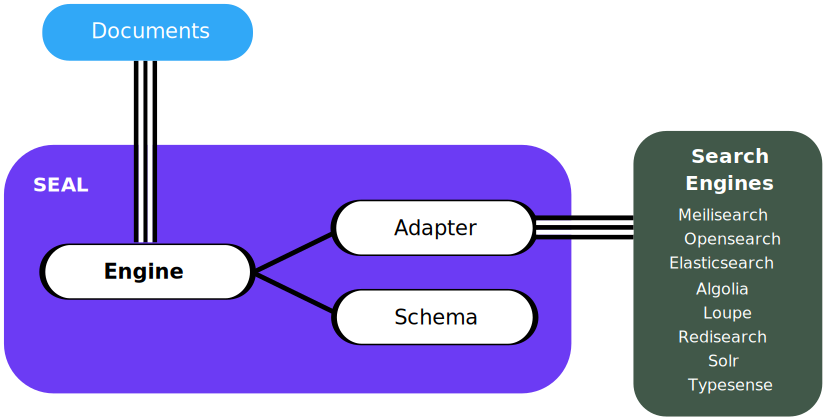

Welcome to SEAL’s documentation!#
Introduction#
SEAL stands for: S earch E ngine A bstraction L ayer
The SEAL project is a PHP library designed to simplify the process of interacting with different search engines. It provides a straightforward interface that enables users to communicate with various search engines, including:
MeilisearchOpensearchElasticsearchAlgoliaLoupeRedisearchSolrTypesense
It also provides integration packages for the Laravel, Symfony, Spiral, Mezzio and Yii PHP frameworks.
It is worth noting that the project draws inspiration from the
Doctrine and Flysystem projects. These two projects have been a great inspiration
in the development of SEAL, as they provide excellent examples of how to create consistent
and user-friendly APIs for complex systems.
Structure#
{kind=link}
SEAL’s provides a basic abstraction layer for add, remove and search and filters for documents.
The main class and service handling this is called Engine, which is responsible for all this things.
The Schema which is required defines the different Indexes and their Fields.
The project provides different Adapters which the Engine uses to communicate with the different Search Engine software and services.
This way it is easy to switch between different search engine software and services.
Glossary
Term |
Definition |
|
The main class and service responsible to provide the basic interface for add, remove and search and filters for documents. |
|
Defines the different |
|
Provides the communication between the Engine and the Search Engine software and services. |
|
A structure of data that you want to index need to follow the structure of the fields of the index schema. |
|
Search Engine software or service where the data will actually be stored currently |
Contents#
Packages#
Full list of packages provided by the SEAL project:
schranz-search/seal- The core package of the SEAL project.schranz-search/seal-algolia-adapter- Adapter for the Algolia search engine.schranz-search/seal-elasticsearch-adapter- Adapter for the Elasticsearch search engine.schranz-search/seal-opensearch-adapter- Adapter for the Opensearch search engine.schranz-search/seal-meilisearch-adapter- Adapter for the Meilisearch search engine.schranz-search/seal-redisearch-adapter- Adapter for the Redisearch search engine.schranz-search/seal-loupe-adapter- Adapter for the Loupe search engine.schranz-search/seal-solr-adapter- Adapter for the Solr search engine.schranz-search/seal-typesense-adapter- Adapter for the Typesense search engine.schranz-search/seal-read-write-adapter- Adapter to split read and write operations.schranz-search/seal-multi-adapter- Adapter to write into multiple search engines.schranz-search/laravel-package- Integrates SEAL into the Laravel framework.schranz-search/symfony-bundle- Integrates SEAL into the Symfony framework.schranz-search/spiral-bridge- Integrates SEAL into the Spiral framework.schranz-search/mezzio-module- Integrates SEAL into the Mezzio framework.schranz-search/yii-module- Integrates SEAL into the Yii framework.
Have also a look at the following tags: